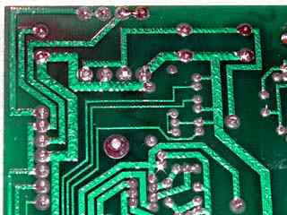
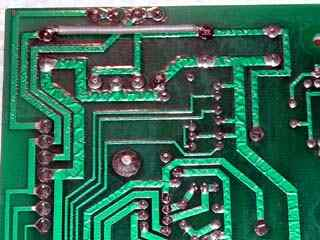
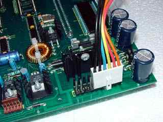
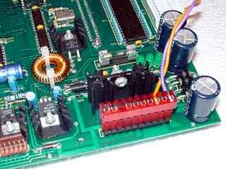
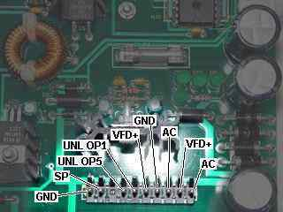
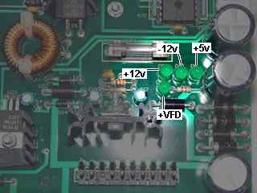

|
|
Powering. By Lee Davison. |
|
These boards can be powered from a single 12v AC transformer. To do this though you will need to make one small modification to the board. A link needs to be fitted from the unregulated +ve supply to the VFD +ve supply. This removes the need for an external supply for the VFD rail.
 
Power connector.
The power connector pins are on standard 0.156" centres. You have two options, either obtain the correct connector or use a PC AT style power connector, both will work though the PC power connector is a poor physical fit.
 
The connections to the power connector are ..
GND DC 0v rail SP Loud speaker Key No pin UNL OP5 Output 5 from the UNL2003 UNL+ +ve supply for the UNL2003 VFD+ +ve supply for the VFD drivers GND DC 0v rail AC AC input VFD+ +ve supply for the VFD drivers AC AC input
 
| Last page update: 4th May, 2004. | e-mail me
 |